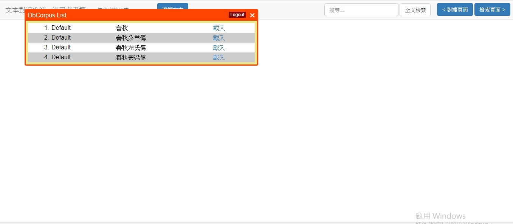
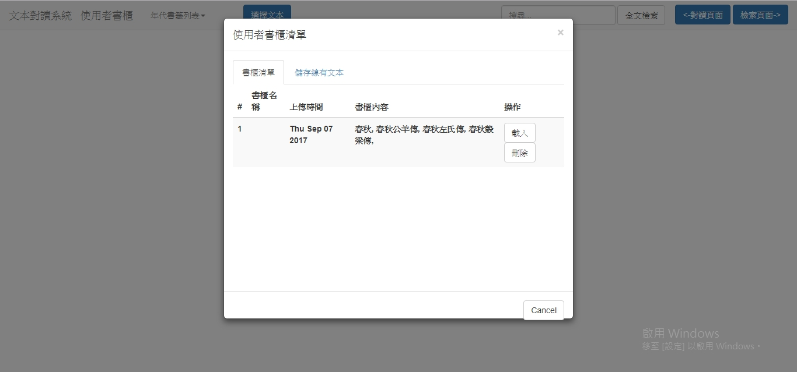
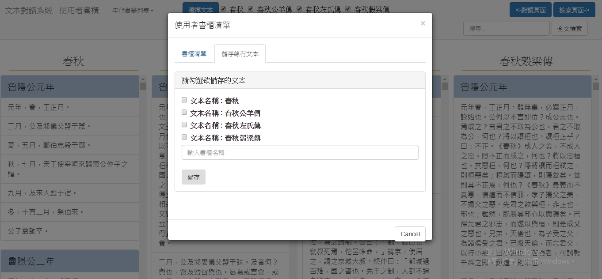
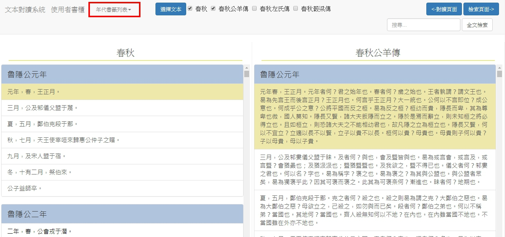
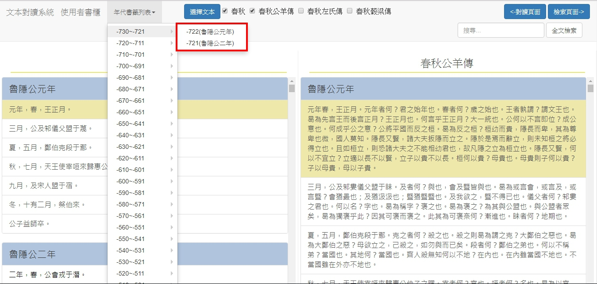
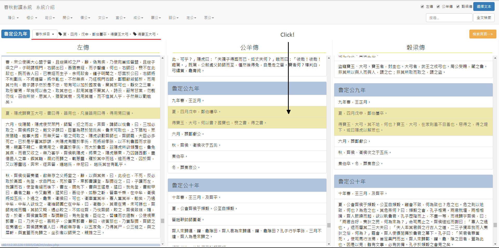
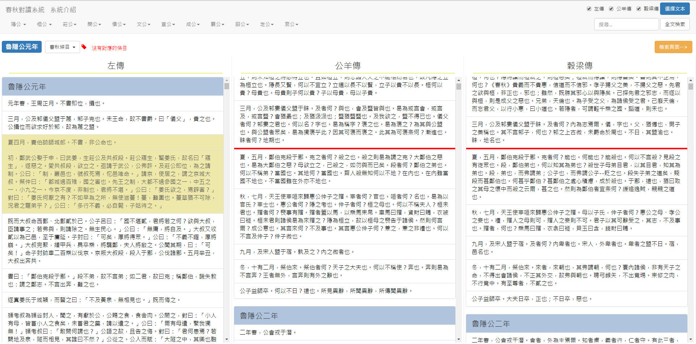
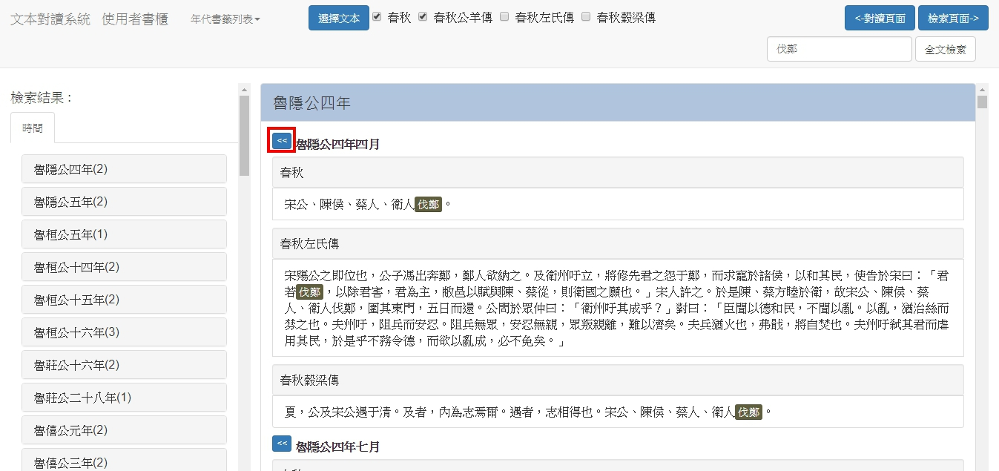
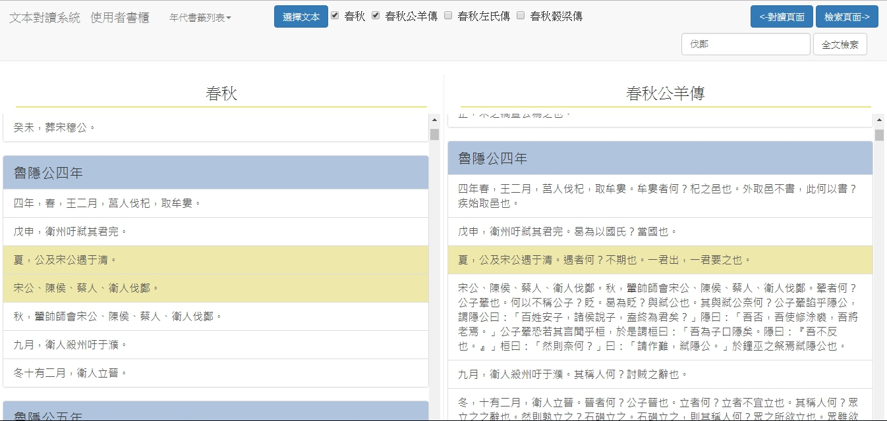

春秋三傳對讀系統介紹
以簡單的範例讓各位快速了解此系統
系統簡介
本系統為春秋三傳對讀系統，以文本中的時間脈絡幫助使用者在《春秋》、《左傳》、《公羊傳》，《穀梁傳》做條目的對讀。
以下會簡單介紹本系統的主要功能 :
前置作業
首先我們可以從 (1) DocuSky匯入文本，或從 (2) 使用者書櫃中載入過去儲存過的讀本。
(1) 點選 文本對讀系統 ，並載入將要對讀的文本。
(2) 點選 使用者書櫃 ，對過去對讀的文本進行管理。
或可將現在正在對讀的文本儲存至 使用者書櫃 。勾選欲儲存的文本並點選按鈕
已將文本順利載入，可以開始進行對讀。
1.文本呈現方式
本系統呈現文本的方式為垂直向下並搭配頁面滑軌讓使用者可以自行滑動至欲觀看的位置。
在系統頁面的上方有一個的按鈕，使用者可以自行選定欲對讀的文本，而《春秋》則為預設值。
EXAMPLE:
在下圖紅框處進行文本選擇，勾選《公羊傳》，即是進行預設文本《春秋》與勾選文本《公羊傳》的對讀。

當使用者所勾選的文本越多時，每分文本所分配到的空間也就越來越小，在這方面系統做的一定程度調節，因此文本數量多時，選擇將《春秋》縮小至紅框框處，如下圖所示:
本系統還有提供春秋時代君主年分的下拉式選單，使用者可以選擇對讀的內容時間，頁面即會呈現所選擇文本的該時間內容，如下圖紅框中所示:
2.文本條目對應
此為本系統的主要功能，當使用者點選任一文本中的任一條目時，系統可以幫使用者對應在不同文本中相同時間的條目。
EXAMPLE:
這邊以《公羊傳》定公九年四月的條目為例:
《春秋》魯定公九年:「夏，四月，戊申，鄭伯蠆卒。得寶玉大弓」。
《左傳》魯定公九年:「夏，陽虎歸寶玉大弓，書曰得，器用也，凡獲器用曰得，得用焉曰獲」。
《公羊傳》魯定公九年:「夏，四月戊申，鄭伯囆卒。得寶玉、大弓。何以書？國寶也，喪之書，得之書」。
《穀梁傳》魯定公九年:「夏，四月戊申，鄭伯蠆卒。得寶玉、大弓。其不地何也？寶玉、大弓在家則羞，不目羞也。惡得之？得之堤下。或曰，陽虎以解眾也」。
下圖中點選黑色箭頭的條目，可以看到系統會自動標出在其他文本之中相同時間所記載的條目，而被縮小的《春秋》，也就是紅線處的部份也會顯示著在《春秋》之中對應到的條目。
而既然有對應的到的條目，當然也會有沒有對應到的條目，尤其在《左傳》中十分常見
對於左傳來說，作者除了解釋《春秋》經之外，也會記載一些沒有被《春秋》所記載的條目。
當對應不到時，會以紅線提醒使用者在其他文本上並沒有相對應的條目，並將紅線標注在與其時間最相近的條目上。
EXAMPLE:
以《左傳》為例：
《左傳》魯隱公元年:「夏四月，費伯帥師城郎。不書，非公命也」。
除了《左傳》以外，在其他三傳中是都沒有記載的，也因此在下圖中，除了《左傳》之外，都是以紅線提醒使用者在其他文本中是沒有相關記載的。
3.全文檢索
本系統提供全文檢索功能，使用者於頁面右上全文檢索區輸入關鍵字，檢索結果會自動跳轉至 。
EXAMPLE:
以"伐鄭"為關鍵字，搜尋範圍為所有文本
下圖中為"伐鄭"的檢索結果， 檢索頁面左區為依時間序列之檢索結果統計(時間後分類)，右區上方為依時間圖示之檢索結果統計表 (視覺畫圖表)，右區下半為檢索結果的文本款目內容。使用者可以點擊左手邊的時間後分類表，在右手邊的檢索結果中，會滑動至使用者所選定的時間。
而上圖紅色框框中的"<<"按鈕，則是可以將該條目的檢索結果在對讀頁面中呈現，點擊該按鈕後，會跳轉至，並顯示該條目在對讀頁面中的結果。
下圖為點選後的結果，若使用者還想回到檢索頁面，點擊右上角 即可。
以上為本系統的簡單說明
若有任何建議或是問題，可以寄信至ray20013247777@gmail.com
我會盡快跟您聯絡，謝謝。